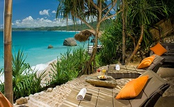

Pantai Nihiwatu

Pantai Nihiwatu, Sumba termasuk dalam urutan ke-17 dalam daftar CNN World's 100 Best Beach In The Word. Pantai ini memiliki pasir yang putih, air laut super jernih dan yang palinh penarik perhatian wisatawan yang datang adalah pemandangan matahari terbenamnya yang super cantik.
Disini terdapat Nihiwatu Resort yang mengesankan. Beberapa kegiatan yang dapat kamu lakukan disini diantaranya diving, berselancar, menikmati sunset atau bergabung bersama penduduk lokal untuk menangkap gurita dan kepiting
Pantai terindah di Indonesia ini dapat dicapai dengan pesawat terbang selama sekitar satu jam dari Bali, dan 90 menit dengan berkendara